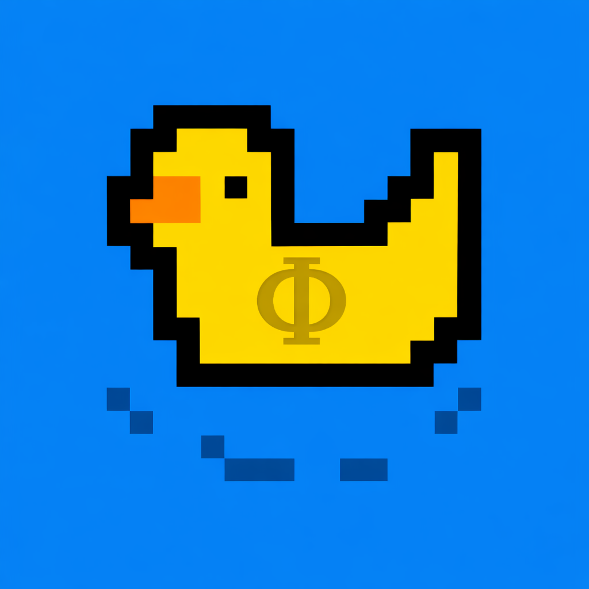

about me
★websites i like, use, visit way too often, or just think are cool
★ the origin story... ★
Hello! I'm ZiggyZonko / Zachary / Lindles etc. (you probably already knew that prior to clicking on this page). I love to code, like this website,
and also love to create things and most of all, learn. My aspirations are to become an engineer / physicist for NASA and someday found AstroDuck! (mark my words...)
Obssessed with ducks if you couldn't tell already
I am currently working on my operating system LindlesOS at the time of writing this (14/09/2026), and have many existing projects that I'm too lazy to finish...
My favourite greek letter is phi, representing the golden ratio, a motif of unachievable natural perfection, not calculated by man, but found in sunflowers, pinecones, hurricane arms etc.
I finally switched to cachyos this month, best decision of my programming career, already gaining more ground than windows could ever cover.
My programming obsession spurred from my first code workshop, then spiralled to programming for my dad and now doing my own thing, with going in my first game jam earlier this year (2026) ~ Hack Club Campfire
old github profile
contemporary github profile
